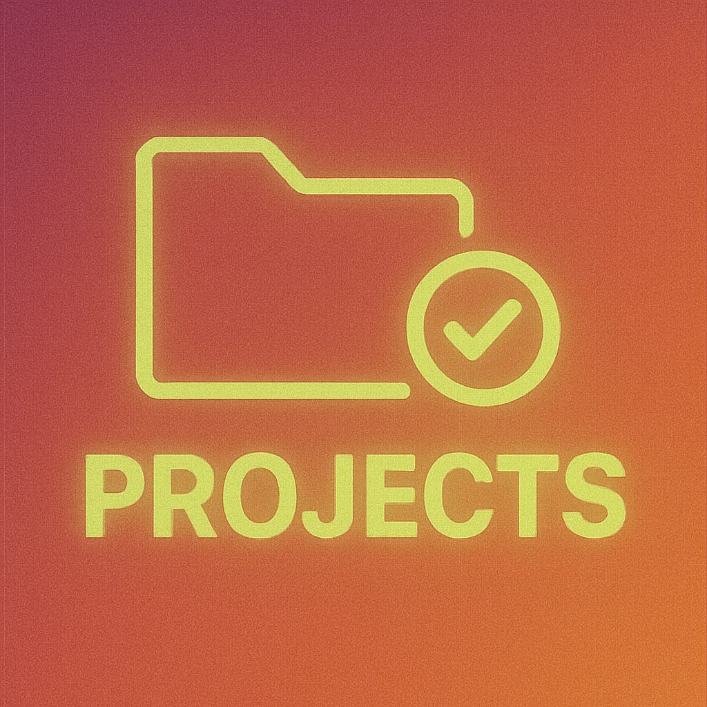

10 Project Manager Certifications (And What Employers Actually Look For)
A practical guide to the 10 leading project manager certifications, including PMP, CAPM and PRINCE2, plus how to choose the right one for your stage and prepare with Kubicle.
Read article
The AI Skills Gap That Junior Auditors, and Their Firms, Can No Longer Afford to Ignore
AI is removing the repetitive fieldwork that trained junior auditors. Here's what the skills gap looks like - and how firms and trainees can close it.
Read article
Overcoming AI Adoption Challenges with Kubicle’s Persona-Based Blueprint
AI promises significant economic and operational impact for companies, yet many organisations struggle to turn that potential into real business value. Despite growing investment...
Read article
Beyond One-Size-Fits-All: A Persona-Based Blueprint for Enterprise AI Literacy
Why so many enterprise AI initiatives fail, and how a human-centered, persona-based approach can turn that failure into success.
Read article
How to Calculate ROI of Graduate Development with a Ready-to-Use Calculator
Did you know that the average graduate takes over four months of training to reach full productivity? This costs firms hundreds of thousands (or more!) every year. Graduate...
Read article
Fall 2025 | Celebrating Our Latest G2 Awards
We’re thrilled to share that Kubicle has once again been recognized by G2, earning a fresh set of badges that highlight the impact we’re making with learners and enterprises...
Read article
The Role of the AI Code of Conduct in AI Use Policies
As AI becomes embedded in core business decisions, organisations can no longer rely on informal experimentation or ad-hoc guidance. Clear governance is essential to ensure AI is...
Read article
Creating an AI Use Policy: A Comprehensive Guide for Enterprises
How to create a robust AI Use Policy with templates, best practices and compliance guidelines for safe, ethical AI adoption.
Read article
The Strategic Imperative for Enterprise Leaders in the Age of AI
The future of work is no longer a distant horizon. It’s unfolding at speed. Touching every role, every function, and every industry. For leaders navigating this transformation,...
Read article
EU AI Act Summary: What Your Business Needs to Know
The EU AI Act represents one of the most significant regulatory developments in the history of artificial intelligence. As the world’s first comprehensive AI law, it introduces a...
Read article
Countdown to Compliance: What the EU AI Act Means for Your Business
The EU AI Act entered into force on 1 August 2024, marking the start of a new chapter in how artificial intelligence is governed across the EU and beyond.
Read article
Introducing a Fresh Brand and a Smarter Website
We’re proud to unveil the new Kubicle. It’s a refreshed brand and smarter website designed to make learning more intuitive, engaging and human. This update isn’t just a visual...
Read article
An Updated Kubicle Experience, Launching January 26th
As we enter 2026, our team at Kubicle has taken ‘New year, new me’ to a whole new level. We are excited to be launching an update to the Kubicle app on January 26. Over the past...
Read article
Kubicle Unveils Academies+: A New Era in Blended Learning for Business Professionals
For nearly a decade, Kubicle has set new benchmarks in corporate training, empowering over one million learners across more than 1,000 enterprises worldwide. The mission has...
Read article
Why Appetite and Ability to Learn is the #1 Skill Management Consulting Firms Need
Organizations and employees are having to adapt their skills at a higher rate than in any point in history. New industries, emerging markets, and groundbreaking technologies keep...
Read article
Kubicle and Rand Mutual Assurance Announce Strategic Partnership to Drive Digital Maturity and Enhance Customer Service
September 30th, 2024 – Kubicle, a leader in data literacy and business analytics training, is excited to announce a new partnership with Rand Mutual Assurance (RMA), a social...
Read article
Lead the Charge in Innovation with Kubicle’s New Technology Academy
Technological innovation isn’t just a buzzword—it’s a necessity. Leaders are not only expected to drive this innovation but also to understand the complex technologies that...
Read article
How to Maximize the Benefits of Investing in Early Career Training Programs
Want to know how leading organisations are preparing their early career hires for success? Join our live session on September 4th, 2024.
Read article
The Key Metrics You Need to Evaluate the Success of Early Career Training Programs
Early career training programs are critical for organizations aiming to build a robust talent pipeline and ensure the long-term success of their workforce. Like most things in...
Read article
Expanding Our AI & Tech Library: Essential New Courses
We are thrilled to announce the addition of a new advanced AI course to our growing library: Advanced Prompt Concepts. This course is designed specifically for organizations...
Read article
The Future of Corporate Training: Why Enterprises are Embracing Microlearning
In the dynamic corporate world, the quest for effective and efficient training methods is relentless. While traditional training methods have their merits, they often fall short...
Read articleKubiFest 2023: A Celebration of Teamwork, Culture, and Aspirations
Last week, the Kubicle team gathered for our annual offsite event, a two-day retreat that brought together staff from three different countries and various parts of Ireland....
Read article
How To Implement A Successful Data Literacy Training Initiative
The facts are staggering. Organisations that want to stay competitive must equip their staff with data literacy skills.
Read article
Why Organizations Should Embrace Alteryx for Modern Data Engineering
In an era where businesses are rapidly becoming data-driven, tools like Power BI and Tableau have gained prominence for data visualization. Yet, as a recent Kubicle article ‘Why...
Read article
Revolutionizing Corporate Finance: How AI Empowers CFOs and Transforms Finance Teams
In previous blogs, as part of our AI series, we have looked at why the time for a company-wide AI policy is now. That can be read here and how AI can be used as a transformative...
Read article
Understanding Artificial Intelligence in the Workplace: Why It Matters for Business Leaders
Before we delve into leveraging artificial intelligence in the workplace as a competitive differentiator, it’s important to recognise that AI has existed for quite some time....
Read article
The Transformative Power of AI in the Workplace
Why understanding AI is no longer optional for business leaders, and how a clear-eyed view of the technology unlocks better strategy, hiring and risk decisions.
Read article
Why the time for a company-wide AI policy is NOW
It only took 2 months for ChatGPT to boast 100 million active users. To put that speed of hyper-growth into context, it took TikTok nine months to do the same.
Read article
Why do financiers struggle with no code and low code technology adoption?
Low and no-code software is testing the limits of IT handholding. IT departments must continually intervene to clean up messes, while business users may need help managing their...
Read article
2022… It’s a Wrap!
2022 was one of Kubicle’s best! …But it wasn’t without its challenges.
Read article
Improve Your Financial Analysis and Reporting With 5 Powerful Excel Add-Ins
Data analytics technology has changed dramatically over the past few years, but Excel remains the tried-and-tested tool for finance professionals worldwide. It’s robust, highly...
Read article
Announcing a New Kubicle Learning Format: PROJECTS
The journey towards data citizenship is one that involves a material investment in personal upskilling. In our own experience, we observe that the average learner can take...
Read article
Why Your Organization Should be Using Alteryx
Businesses are becoming increasingly data driven and opting for tools such as Power BI and Tableau for data visualization instead of Excel which has significant volume...
Read article
Excel Function SPOTLIGHT
Available in Excel for Microsoft 365 Excel for Microsoft 365 for Mac Excel for the web
Read article
Whitepaper: Data Literacy Trends in the Financial Services Sector
Read our recently published report on data literacy trends in the Financial Services sector for 2022. Based on an analysis of over 10,000 Kubicle learners from finance companies,...
Read article
Using IDEs, Anaconda and Jupyter Notebook
Most programmers make use of applications called Integrated Development Environments, or IDEs, that aid the programming process.
Read article
How to do a VLOOKUP in Excel
Using VLOOKUP successfully can feel like a major victory to many – and it should, it’s not one of Excel’s most straightforward functions to grasp; it takes practice to get it...
Read article
The Prevalence of Data & Analytics in Sport
My NBA fantasy league has defined the morning routine – watching highlights and browsing Reddit for half baked insights about the obvious: how statistics in the NBA have changed...
Read article
Data Literacy in the Financial Services Sector
“The most powerful asset that businesses hold has changed. Data now underpins success in mining both physical assets and digital business opportunities—improving accuracy,...
Read article
The Future of the Management Consultants Tool Stack
The age-old technical weapons of choice in Management Consulting still prevail. Excel, Outlook and PowerPoint are where most consultants spend their time. In fact, a first or...
Read article
Kubicle: What are we Building?
Our Mission is to Democratize Data through Data Citizens.
Read article
GOING, GOING, GONE! …What do NFT’s & ‘Charlie Bit My Finger’ Have in Common?
One of YouTube’s first viral videos has been sold for over €600,000 as an NFT (non-fungible token). The 55-second video, now viewed over 880 million times, was sold in an auction...
Read article
Kubicle’s Accredited Learning: Earn CPD Credits as you Enhance your Data Literacy Skills
Kubicle is on a mission to make no-code online training in data analytics accessible to everyone, enabling people to thrive in the modern workplace.
Read article
4 Steps for Integrating US Census Data with Your Company’s Data
Using public data can help improve the quality of your data analysis. It allows you to fill in any gaps in your data or to create more insights into your company’s data. We’ll...
Read article
3 Step Guide: Get US Census Data into Power BI
Integrating public data into your analysis can provide powerful insights. However this task rarely comes easily, as public data tends to come in an awkward format or a different...
Read article
First Steps in Alteryx: Importing Excel Files
In a previous post, we gave a general guide on how you can import files into Alteryx. In this post, we’ll look specifically at Excel files.
Read article
CAPM vs APT. Which One Is Right for You?
The Capital Asset Pricing Model (CAPM) and Arbitrage Pricing Theory (APT) are two of the most popular asset pricing models used by analysts and investors. In two previous posts we...
Read article
How to Make the Most of Public Data For Your Business
By now, almost every business around has figured out that data and analytics represent a big opportunity to generate compelling insights into the company, and thereby improve...
Read article
First Steps in Alteyrx: How to Import Your Data
A lot of your work with Alteryx will involve using and manipulating a wide variety of data sources. One of the strengths of Alteryx is that you can import data from many different...
Read article
Leveraged Buyouts: How to Estimate Your Returns
An absolutely critical stage in calculating a Leveraged Buyout model is to measure the returns achieved by the investor. In this post we’ll measure the return achieved by a...
Read article
What Is the Difference Between Excel and Power BI?
For many years, Excel has been the most widely used data analysis software for most businesses. However, in recent years, you may have become aware of Power BI, which is another...
Read article
How Do Outer Joins Work in Alteryx?
In a previous post, we saw how the Join tool in Alteryx merges two tables into one. However, maybe you want to combine all the data from one of the input tables with the data in...
Read article
Tableau and Power BI: What’s the Difference?
Tableau and Power BI are probably the two best-known products when it comes to self-service business intelligence and visualization tools. Although there are many similarities...
Read article
How Public Data Can Be Valuable to Your Businesses
We all know how important data is becoming to modern businesses. The amount of data floating around in modern companies is such that a wide range of insights can be gained just by...
Read article
How to Combine Multiple Tables Horizontally in Alteryx
Joining tables together is a common task in Alteryx. In this post, we’ll discuss how to combine tables horizontally using the Join tool. The Join tool is used to combine tables...
Read article
The Best Publicly Available Data for Business
In most countries, increasing quantities of public data are being made available, particularly by public organisations. This data can be useful to many businesses, as it can be...
Read article
How to Combine Multiple Tables Vertically in Alteryx
One of the most common activities in Alteryx is combining datasets together. In the business world, the data you want to analyse usually comes from more than one source, and...
Read article
Essential Key Metrics from a Leveraged Buyout
After creating any sort of financial model, you’ll usually want to create some ratios or other metrics that analyse the figures you’ve produced. This is no different when...
Read article
4 Ways to Make the Most of Online Learning
Online learning has come of age and its popularity shows no sign of slowing down. Having a virtual classroom at your fingertips is often ideal for those with busy lifestyles, and...
Read article
What is the Difference Between Alteryx and Tableau?
Alteryx and Tableau are two of the best known software products in the world of analytics. Both are used in many companies to obtain valuable insights from data. But what role...
Read article
How To Project Cash Flows After a Leveraged Buyout
Cash flows after a leveraged buyout can suffer as a result of taking on debt, the standard practice in the leveraged buyout (LBO) process. For the LBO to work, it’s essential that...
Read article
When Designing Dashboards, Less Is More
Over the first four posts in this series, we’ve learned how to select charts, how to lay out a dashboard using those charts, and how to maximize the impact of these charts. In...
Read article
How to Build the Debt Schedule for a Leveraged Buyout
In a leveraged buyout using debt, one company purchases another using a significant amount of borrowed money to meet the cost of the acquisition. As a result, it is critically...
Read article
5 Ways You Can Maximize the Impact of Your Charts
Over a number of previous posts (here, here and here), we have learned about business dashboards in detail. We have learned how to select the right charts to add to the dashboard,...
Read article
How to Create a Sources and Uses Table for a Leveraged Buyout Transaction
In a corporate finance transaction, such as a Leveraged Buyout, a sources and uses table outlines all the sources of funding for the transaction, and all the uses of this funding....
Read article
The Good, the Bad and the Ugly of HR Analytics
Nowadays, we’re all probably desensitized to being spied on. Social networks store enormous amounts of data on us, generating light and heat online but nothing more. State...
Read article
The AI Skills Gap: The Missing Link Between AI Investment and Real Business Value
Most AI programs fail because of a skills gap, not technology. Learn how AI employee training programs drive productivity, reduce risk, and meet new compliance obligations, with a...
Read articleNo posts match your search.
Try a different keyword, or browse by topic above.